无锡位于江苏省中部偏南，是中国江苏省的一个城市，是长江三角洲地区重要的经济、文化和旅游城市。 无锡有着悠久的历史文化底蕴，是中国“太湖明珠”之一，经济实力雄厚，是全国重要的制造业基地和高新技术产业聚集地， 无锡拥有独特的自然风光和人文景观，众多美食和民俗文化让游客留连忘返。 总之，无锡是一座具有深厚历史底蕴、 现代化水平高的城市，是一个值得人们前来探索和感受的地方。
无锡特色景点
灵山大佛
灵山大佛位于江苏省无锡市滨湖区马山镇灵山路1号，大佛南面太湖，背倚灵山。
1997年11月15日，大佛落成开光， 高88米，是中国第二高的巨型佛像；连同三层基座在内通高101.5米。灵山大佛佛像总共耗用铜725吨，佛体由2000块铸造铜壁板拼装焊接而成。
鼋头渚
无锡市鼋头渚景区作为江南地区规模最大的山水园林胜境，拥有充山隐秀、鹿顶迎晖、鼋渚春涛、横云山庄、万浪卷雪、湖山真意、十里芳径、太湖仙岛、江南兰苑、樱花谷、无锡人杰苑及中犊晨雾、广福古寺等较为出名的景点。
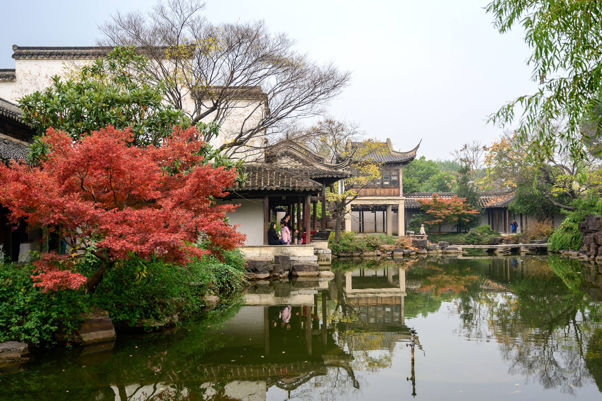
惠山古镇
惠山古镇景区，位于中国江苏省无锡市梁溪区西部，占地面积3.5平方千米，核心区域面积1.09平方千米，其历史可追溯至南北朝时期建成的惠山寺，唐代和明清时期在寺旁建有园林、祠堂，形成惠山古镇。
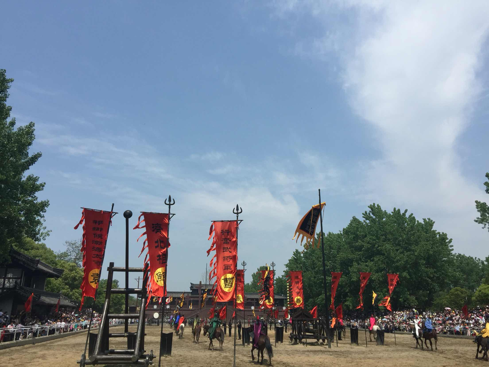
三国水浒城
三国水浒景区，位于中央电视台无锡影视基地，是中国首创的大规模影视拍摄和旅游基地。始建于1987年，是我国首家以影视文化与旅游相结合的主题园，也是国家首批5A级旅游景区。
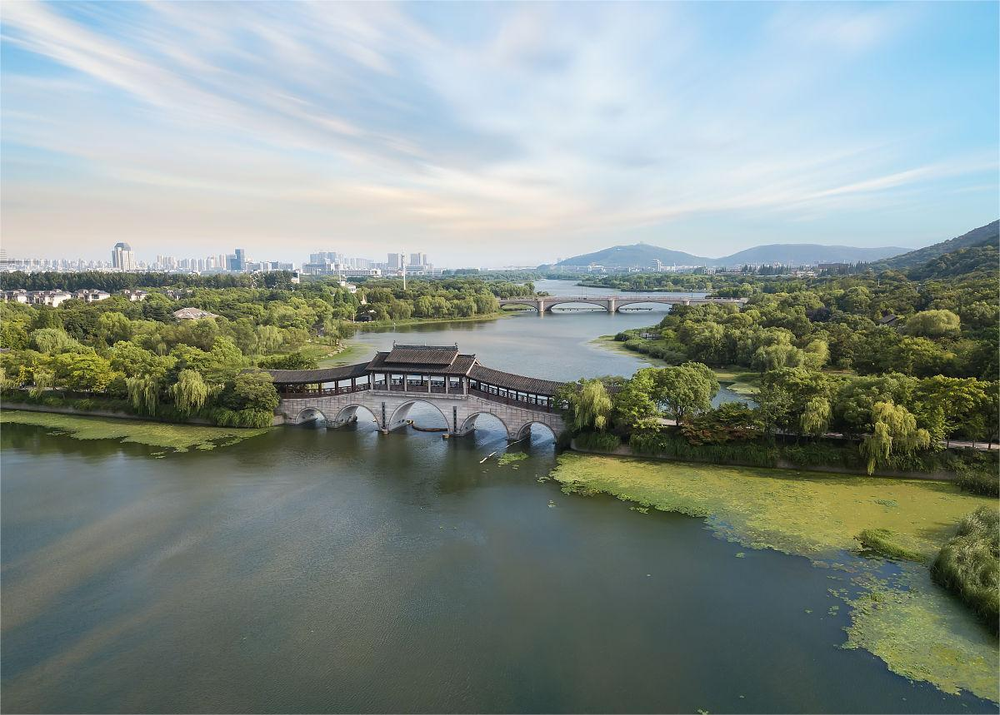
长广溪湿地
江苏无锡长广溪国家湿地公园位于江苏省无锡市西南郊，总面积690公顷，是连接蠡湖和太湖的生态廊道。
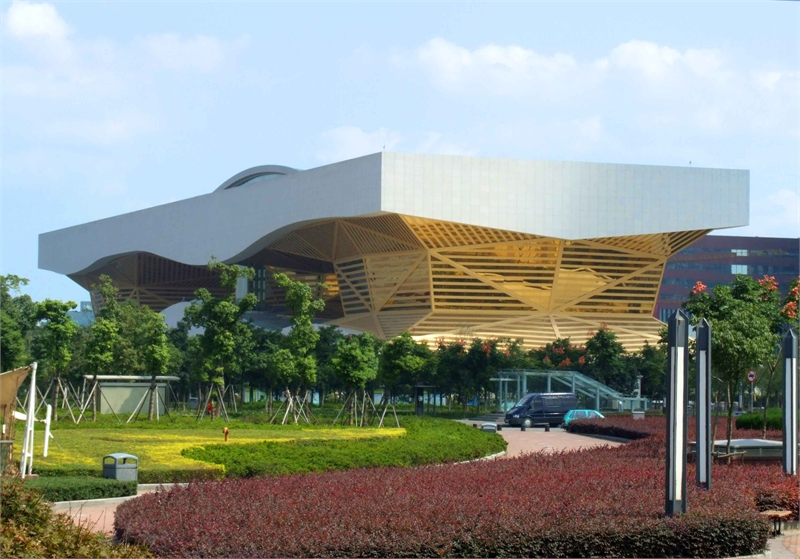
无锡市博物馆
无锡博物院拥有馆藏文物近4万件，珍贵文物1487件/套，以古代书画、历代紫砂、惠山泥人、近现代革命文物和民族工商业文物为主要特色，尤以书画藏品在博物馆界较为出名。倪瓒手迹《苔痕树影图》堪称“镇馆之宝”。
无锡特色美食
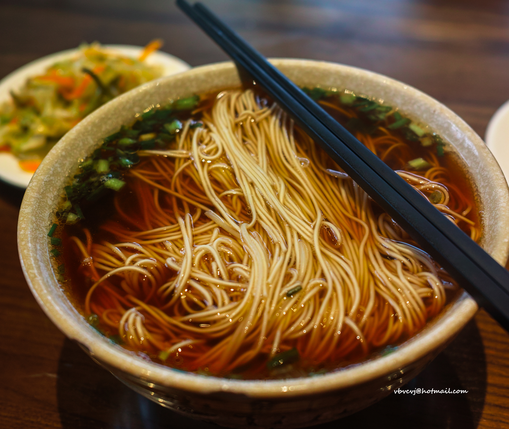
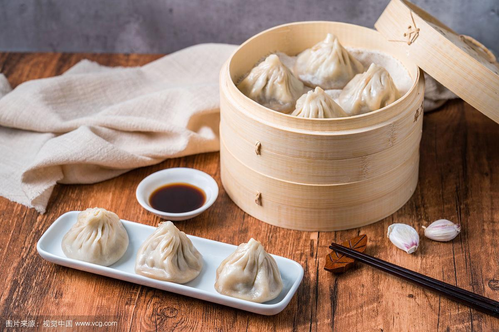
 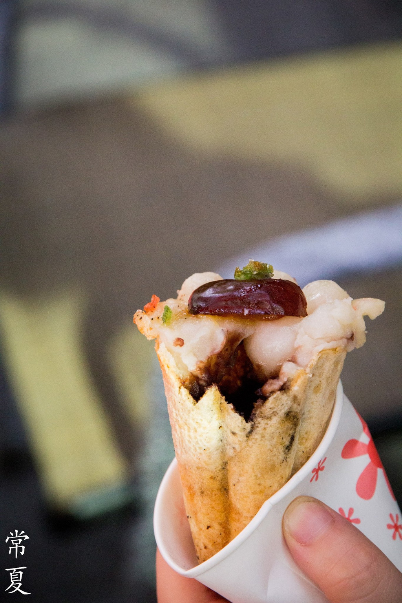
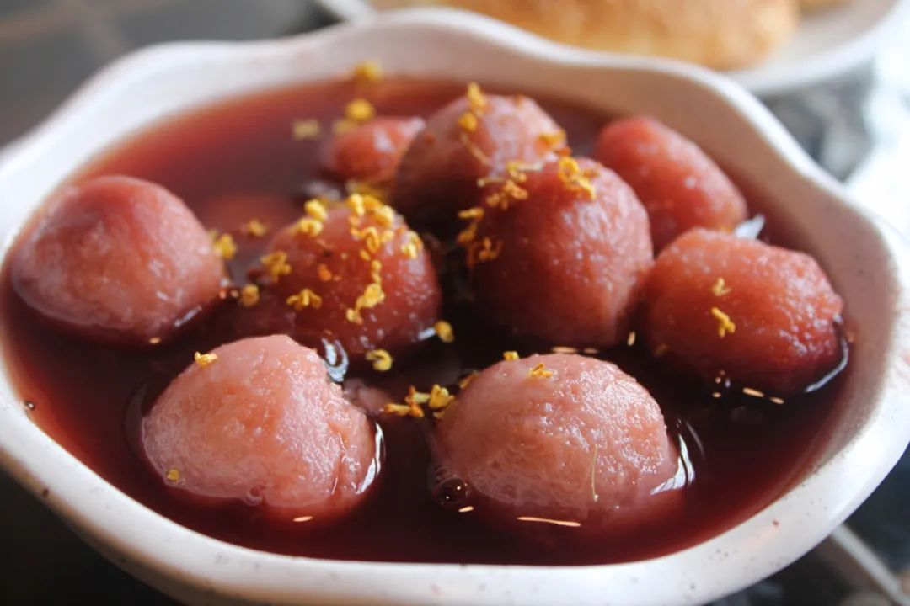
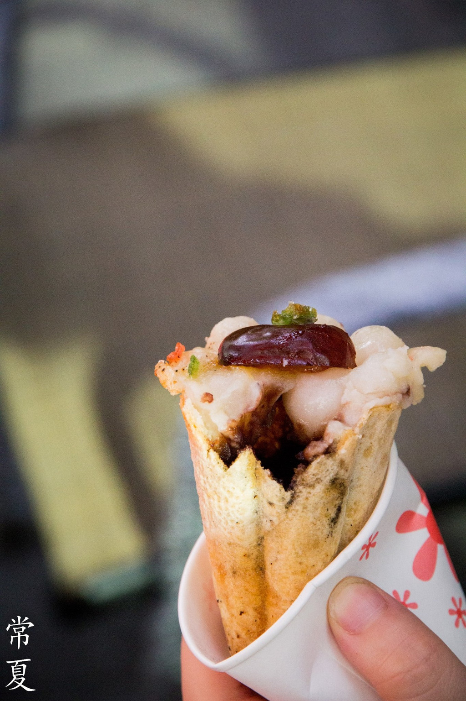
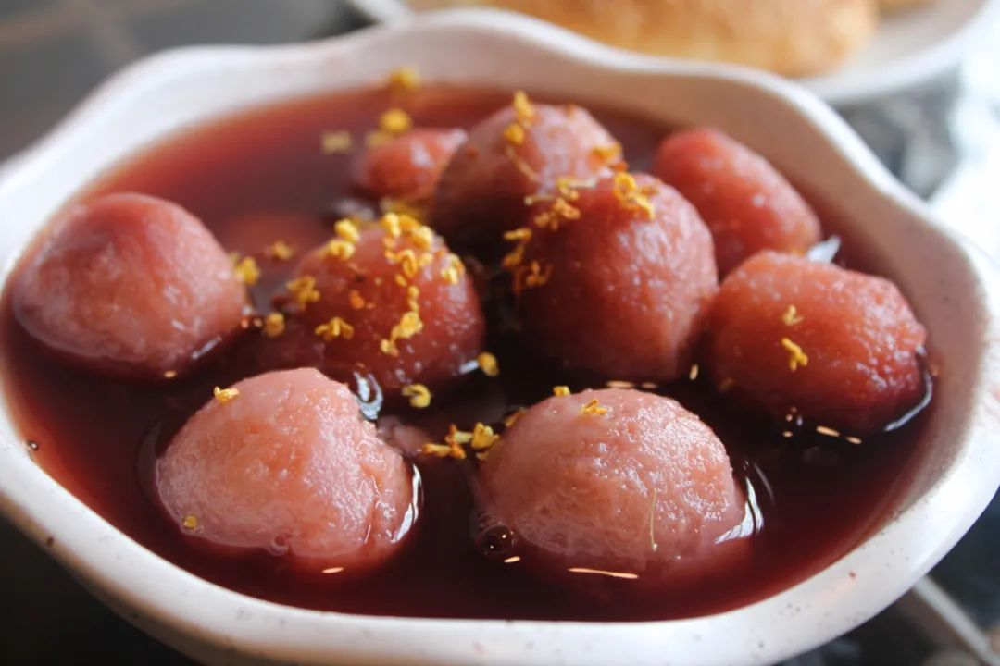
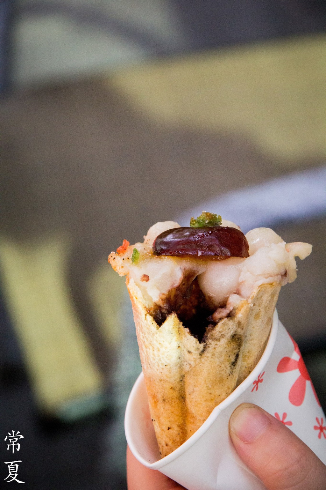
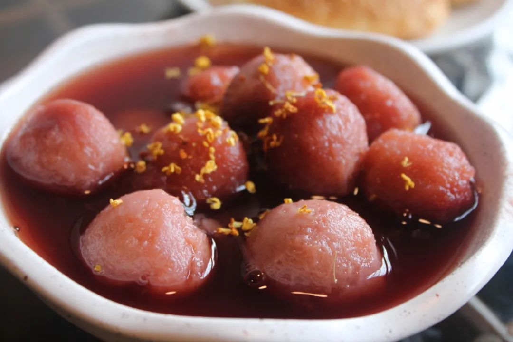